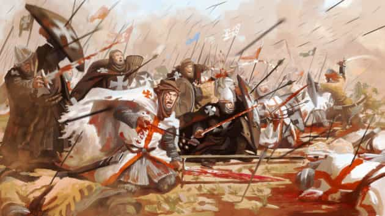

< < < Back
Is Islam Really The Biggest Threat To The West? – Return Of Kings
I understand this will be a sensitive topic, especially with the current election cycle in the United States and the recent (weekly? daily?) attacks now being carried out by ISIS in Europe. My purpose in writing this post is to a) expose truth and dispel ignorance and b) be a voice of dispassionate reason on a very emotional topic.
I think it is best to start off by making two points clear on my part as author. First—Islam is a problem, but in the same way as guns are a problem. It is people that kill people, not guns, and I believe the same argument can be said of Islam. This is not to dismiss the real threat of radical Islam, which I am not doing. That said, there are millions of Muslims living in America and Europe today who are not running around killing anyone. I know this will unleash the rage trolls in the comments, but this is simple fact. If Muslims truly wanted all us kufar dead, we would be.
Second—ISIS has been proven to be a creation of the CIA and thus has backing and support from western allied NATO nations. America Created Al-Qaeda and the ISIS Terror Group is an excellent introduction to why all this terror is being unleashed on the world in the name of Islam.
There are essentially three wars being waged in Syria: one between the government and the rebels, another between Iran and Saudi Arabia, and yet another between America and Russia.
Never forget. When “they” want you to hate someone, it is because it is useful for them. Again, I am not as author dismissing the real threat of radical Islam. I am merely asking you to suspend your anger and look behind the curtain to the wizard pulling your emotional strings.
With these two points made clear, let’s get to the heart of the problem that is Islam’s threat to the West.
A Western existential crisis that has nothing to do with Islam, and everything to do with the West itself.
Islam has forced the West to ask itself two very uncomfortable questions. What do you stand for? What do you believe in?
So when we say we are living amongst Islamist, fanatical sharia driven scum… who wish to completely destroy this nation… you just met one of them.
~ Tommy Robinson
The above video is just one of many you will find on Muslim no-go or exclusion zones in Britain and Europe. Islam is clearly a force in Europe and a growing one in the Americas. To deny this is to be completely blind to reality. But is the West so blind now with rage we can’t see what Muslims and Islam are trying to open our eyes to in order to see?
If we adjust our lens on Islam but a fraction of a degree, we could phrase the fundamental question it poses to The West from another perspective. A question Tommy Robinson alludes to in his quote above.
What “culture,” what “way of life,” are Muslims threatening to destroy?
An unshakeable and deeply held belief in God, His moral teachings and the potential judgement of an afterlife in hell or heaven? God and Christianity is now permanently expunged from Western consciousness, especially in the media, education, workplace and political spheres of life – i.e. the cultural mainstream of society.

From the end of the Roman Empire through a 1000 years of medieval darkness, to the middle ages of the Renaissance and finally the Enlightenment, Europe (and then America) was a Christian culture, society and people. After 2000 years, it no longer is. Getting angry about it is not going to change this fact. For America or Europe to be Christian again is going to require a miracle. One I don’t see coming anytime soon.
What about traditional marriage between a man and a woman? Please, we know the answer to that one.
What about patriarchal gender roles based on masculinity and femininity? You know, husband and wife, father and mother? Provide and protect, home and hearth? The family as the foundational unit of a just, peaceful and happy society?
ROK and our community of traditional, masculine and proudly heterosexual men, now being threatened with banishment from the whole of the EU, answers that question. Do I need to even say one word about the current status of democracy and its institutions in the West?
Again I ask you. What culture is Islam threatening to destroy in the West if it takes over? What values and beliefs are Germans, and many other Europeans, now finally starting to stand up and defend as “our way of life?”
Milo Moiré held up a poster reading “Respect us! We are no fair game, even when we are naked!!!” in Cologne, Germany to protest the 1,000-member Muslim rape gang that ran amok on New Year’s Eve.
“I stand for women’s freedom to move freely. For the things we’ve achieved in the past 50 years – for women’s emancipation,” Moiré said.
Swedish Liberal Party Youth Wing Calls for Legalization of Necrophilia, Incest
The Swedish Liberal party’s youth wing proposed legalizing necrophilia and incest Sunday during the group’s annual meeting in Stockholm.
According to the motion filed, two consenting siblings 15 years of age and older should be allowed to engage in sexual intercourse while sex with a human corpse should also be legalized so long as the deceased gave written permission prior to passing.
Speaking with Swedish news site Aftonbladet, Liberal Youth leader Cecilia Johnsson painted the move as a progressive step forward for the Scandinavian country.
“We are a youth organization and one of our task is to think one step further,” Johnsson said.
Johnsson stated that although most of society views the practices as “disgusting,” such acts should not be outlawed by the government.
While I do not condone whole areas of Europe becoming Muslim exclusive zones where no native European can walk without being assaulted, including the police trying to enforce the laws of the state, in consideration of all the above, can you blame Muslims for wanting to isolate themselves to protect their families and children from European and Western culture, values and way of life?
Whatever the West was, it may no longer exist to be threatened or destroyed by Islam
ROK has been documenting the collapse of Western civilization now for years. I don’t want to end this piece on a sad or negative note, but this video encapsulates I think what all Westerners are feeling right now.
What the West is feeling is not simply anger and fear, but sadness and grief at a loss of culture, of values and of traditions that we in the West have allowed to let go. We have no one to blame but ourselves for this loss. Muslims and Islam are simply a reminder of what we once were—proud, distinct and morally grounded in a belief in God, truth and justice.
You can hear this sadness and grief ring out clear in Tommy Robinson’s voice. He makes some excellent points calling out the real dangers of immigrant Muslims that Trump is raising the alarm on in the US election right now. If The West and Europe is paralyzed in it’s response to Islam and Muslims, it is because we no longer have a cohesive value system that anyone wants to rally around and defend. The modern, Western, secular, liberal, safe-space, gender-fluid, do-as-thou-wilt values embraced and enforced by the minority cultural dictators that are our feminist, SJW and LGBT overlords… are empty, vapid, dissolute and ultimately of no meaning to the heterosexual majority of men and women who are being asked to stand up and defend this “way of life” from Islam.
Tommy accurately points the finger of blame at those responsible for this mess, but both he and Watson fail to make the connection between ISIS, radical Islam, Saudi Arabia and thus the CIA’s deep, deep, deep influence on Islam and Muslims in the spread of radical Sunni Wahhabism.
US Sponsored “Islamic Fundamentalism”: The Roots of the US-Wahhabi Alliance
The alliance between the United States and the Kingdom of Saudi Arabia helped spread the ideology of fundamentalist Sunni Islam all over the globe. The majority of its victims are not citizens of Western countries, but citizens of countries that U.S. elites consider a threat to their economic and geopolitical interests. Many victims of Sunni extremism (often called Wahhabism or Salafism[1]) are in fact Muslims (often with a secular leftist or nationalist political background), moderate Sunni or members of Shiʿite Islamic faith.
Tommy’s voice is a lone voice, but his voice would ring more clear if he also raged and exposed WHY these young Muslims are being radicalized by large political/financial/military Western elites for a specific objective. If radical Sunni Wahhabism is strong in immigrant communities, you need only look to the destruction we, the West, have wrought in Afghanistan, Iraq, Libya and Syria, with Iran in the cross hairs as the last Muslim land left still intact by Western, cultural “enlightenment.”
The threat that Islam poses to the West can be a wake up call. Not a call to anger and hatred of the other that threatens us, but to look behind our own walls to the enemies within the gates that have allowed this to happen.
The threat of Islam is also an opportunity for the West to once again define itself. What values beat in the heart of the West today? What do Western hearts ache to express and believe in? About man? About life? About our purpose and reason for existence?
Islam has answers to these existential questions that are, I believe, the very real root cause for the West’s malaise, anger and fear of Muslims. If Islam poses any threat to the West, it is fundamentally a religious, philosophical and metaphysical one. The West can’t answer Islam’s threat to “our way of life” because we believe in nothing, and have nothing we stand for anymore that is of any real value or based in any way on truth and justice.
The West once had a dream for itself and its people.
Islam’s presence in the West is reawakening that dream that was Rome
But will the West, in its undisciplined anger at Muslims and Islam, directed to that purpose to serve the divide and conquer plan of the elite, simply play the part of dumb animal once again and go raging into Muslim lands as the crusaders did in the past?
Or, will the West actually take a moment to breathe, to look at the other, and realize that the person I am being told is my enemy is actually my ally and friend.
I am not asking you to change your mind about Islam and Muslims based on my words alone. What I am asking you is to be sure, 100% sure, that you are not being played the fool.
O mankind, indeed We have created you from male and female and made you peoples and
tribes that you may know one another. Indeed, the most noble of you in the sight of
Allah is the most righteous of you. Indeed, Allah is Knowing and Acquainted.
~ Holy Quran 49:13
I will completely understand your natural reaction to continue to respond with anger toward Islam and Muslims. But if you could do me just one single request… ask yourself this question. Cui bono? Who benefits from your hate and rage toward Islam and Muslims?
 If you like this article and are concerned about the future of the Western world, check out Roosh's book Free Speech Isn't Free. It gives an inside look to how the globalist establishment is attempting to marginalize masculine men with a leftist agenda that promotes censorship, feminism, and sterility. It also shares key knowledge and tools that you can use to defend yourself against social justice attacks. Click here to learn more about the book. Your support will help maintain our operation.
If you like this article and are concerned about the future of the Western world, check out Roosh's book Free Speech Isn't Free. It gives an inside look to how the globalist establishment is attempting to marginalize masculine men with a leftist agenda that promotes censorship, feminism, and sterility. It also shares key knowledge and tools that you can use to defend yourself against social justice attacks. Click here to learn more about the book. Your support will help maintain our operation.
Read More: British Police: Men Who Try To Get Laid Are Guilty Of Misogynistic “Hate Crimes”